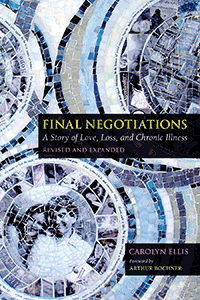

<body bgcolor="#FFFFFF" text="#000000" link="#0000FF" vlink="#CC0000" alink="#CC0000"><center><hr width="350" size="1" align="center" noshade>A poignant autoethnography that reflects back forty years on loving someone chronically ill<hr width="350" size="1" align="center" noshade><p><a href="https://cdcshoppingcart.uchicago.edu/Cart/ChicagoBook.aspx?ISBN=&&PRESS=temple" target="_top">Buy this book!</a> | <a href="https://cdcshoppingcart.uchicago.edu/Cart/Cart.aspx?PRESS=temple" target="_top">View Cart</a> | <a href="https://cdcshoppingcart.uchicago.edu/Cart/Cart.aspx?PRESS=temple" target="_top">Check Out</a></p><p></p></center><!--none//--><h1 class = "booktitle">Final Negotiations</h1> <h1 class = "subtitle">A Story of Love, Loss, and Chronic Illness</h1>
<h3>Carolyn Ellis Foreword by Arthur Bochner</h3>
paper: $37.95, Oct 18<BR>EAN:&nbsp;978-1-4399-1716-9<BR><font color=#990033>Not Yet Published Preorder</FONT><font size=-7><br>&nbsp;</font></p><p class="info">cloth: $104.50, Oct 18<BR>EAN:&nbsp;978-1-4399-1715-2<BR><font color=#990033>Not Yet Published Preorder</FONT><font size=-7><br>&nbsp;</font></p><p class="info">e-book: $37.95, Oct 18<BR>EAN:&nbsp;978-1-4399-1717-6<BR><font color=#990033>Not Yet Published Preorder</FONT><font size=-7><br>&nbsp;</font></p></p></td></tr></table>
<BR> <p class="info">426 pp<BR> 6 x 9<BR> <p class="info"><font size=-7>&nbsp;</font></p><p class="info">
</P><BLOCKQUOTE></BLOCKQUOTE>
<p>Praise for the Previous Edition
<i>"This is a remarkably revealing portrait of a couple dealing with a debilitating chronic illness." </i>-<b><i>Kirkus Reviews</i></b>
<br/><br/>
In this revised and expanded edition of <i>Final Negotiations-</i>a personal account of caring for her partner, Gene Weinstein, and then coping with losing him to chronic emphysema-Ellis reflects back on her experiences as a caregiver, focusing on identity, vulnerability, emotions, and the aging process of an engaged academic. Now, decades later, she reconsiders who she was then, and how she has continued to be affected both by these events and by writing about them. She contemplates how she might act, think, and feel if she were going through the caregiving process again, now.
<br/><br/>
Taking an autoethnographic perspective, Ellis focuses on her feeling and thinking self in relationships, narrating particular lived experiences that offer a gateway into understanding interpersonal and cultural life. In her new epilogue, "From New Endings to New Beginnings," Ellis describes her changed identity and how <i>Final Negotiations</i> informs her life and her understanding of how she and her current partner grow older together. She hopes her book provides companionship and comfort to readers who also will suffer loss in their lives.<br>
<P CLASS="top"><A HREF="#top">BACK TO TOP</A></P>&nbsp;
<BR>&nbsp;
&nbsp;<P>
</P><BR>&nbsp;
<H2 class="inpageheading"><A NAME="author bio"></a>About the Author(s)</H2><p><b>Carolyn Ellis</b> is Distinguished Professor of Communication at the University of South Florida and author of numerous books, including <i>Evocative Autoethnography: Writing Lives and Telling Stories</i> (with Arthur Bochner). She is the co-author of <i>Autoethnography: Understanding Qualitative Research</i> and the co-editor of <i>Handbook of Autoethnography</i>, both with Stacy Holman Jones and Tony Adams.<br>
<P CLASS="top"><A HREF="#top">BACK TO TOP</A></P>
<p><h2 class="inpageheading"><a name="subjects"></a>Subject Categories</h2> <p><a href="http://www.temple.edu/tempress/biography.html" target="_top">Biography/Memoir/Autobiography</a> <br><a href="http://www.temple.edu/tempress/sociology.html" target="_top">Sociology</a> <br><a href="http://www.temple.edu/tempress/disability.html" target="_top">Disability Studies</a> <br><a href="" target="_top"></a> <br><a href="" target="_top"></a> </p>
</p>
<P>
</P>
<p align="center"><a href="https://cdcshoppingcart.uchicago.edu/Cart/ChicagoBook.aspx?ISBN=&&PRESS=temple" target="_top">Buy this book!</a> | <a href="https://cdcshoppingcart.uchicago.edu/Cart/Cart.aspx?PRESS=temple" target="_top">View Cart</a> | <a href="https://cdcshoppingcart.uchicago.edu/Cart/Cart.aspx?PRESS=temple" target="_top">Check Out</a></p><p><font face="Arial" size="1"><a href="copyright.html" onMouseOver="window.status='Web Copyright Policy';return true;" onMouseOut="window.status=''" title="Web Copyright Policy">&copy;</a> 2018 <a href="http://www.temple.edu" target="new" onMouseOver="window.status='Link to Temple University home page';return true;" onMouseOut="window.status=''" title="Link to Temple University home page">Temple University</a>. All Rights Reserved. http://www.temple.edu/tempress/titles/1164A_reg.html</font></p>